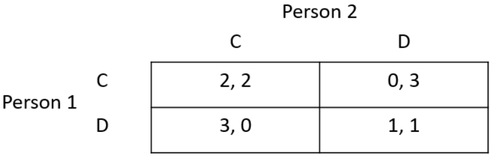
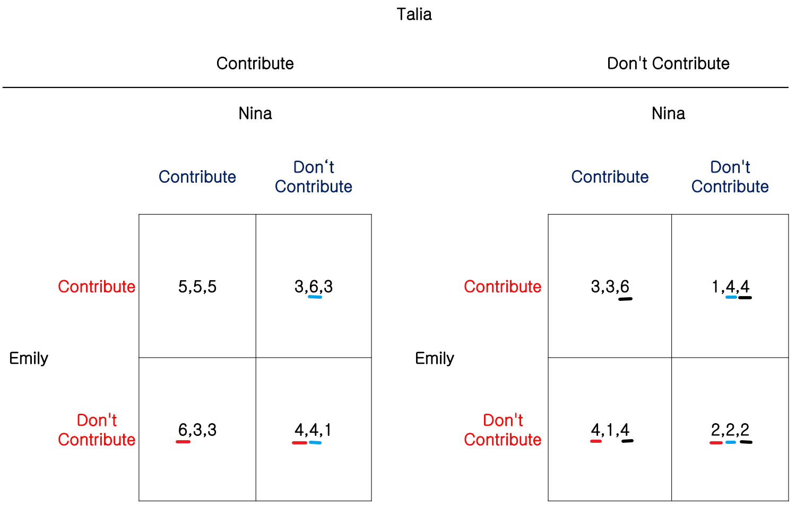
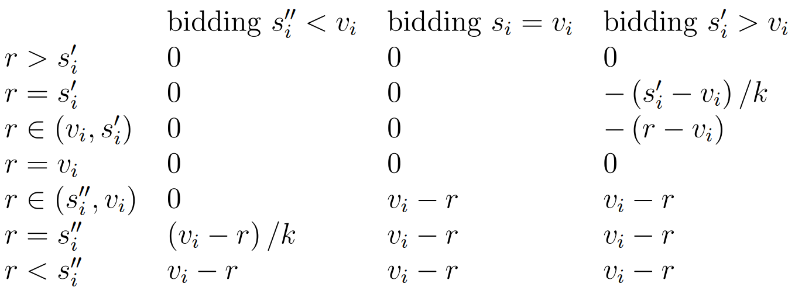
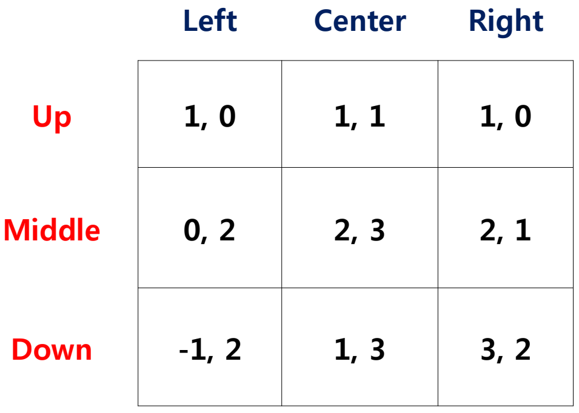
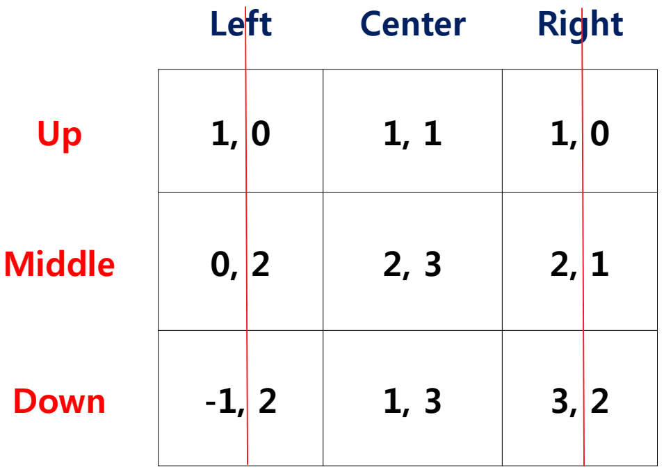

The one whose number is close to 32 of the average win.
If you assume all other people choose the average of the range, i.e., 50, then you may choose 50×32≈33. If you assume all other people have thought about this, i.e., they will choose 33, then you may choose 33×32=22, and so on.
Another prospective: the answer cannot exceed 100×32≈67, similarly we can repeat the process to get 67×32≈45, 45×32=30, and so on.
Both ways of thinking will derive 0 ultimately, but choosing 0 must not be the optimal strategy.
Concepts in Game Theory
Players: I={1,⋯,n}
Actions: a=(a1,⋯,an)∈A=A1×⋯×An
Payoff function (or utility function): ui:A→R for player i
Example
Prisoner's Dilemma

where action C means "Cooperate" while D means "Defect". The numbers in each cell are payoffs (the former one is the payoff of Person 1 and the latter is the payoff of Person 2).
Definition ais a Nash equilibrium iff∀i,ai∈BR(a−i)
Discrete Example
Still consider the Prisoner's Dilemma described above.
If a=(C,C), a1 is not a best response and a1∗ should be D.
It is similar for a=(C,D) and for a=(D,C).
If a=(D,D), a1 and a2 are both best response. Hence, (D,D) reaches Nash equilibrium.
Continuous Example
Price Competition
2 restaurants with prices Px and Py.
Num of customers for each restaurant: Qx=44−2Px+PyQy=44−2Py+Px
Cost of serving each customer is 8.
Each restaurant's goal is to maximize its profit.
They set prices simultaneously.
Since the quantity functions are the same form, 2 restaurants are substitute.
The profit of restaurant x is Πx=(Px−8)(44−2Px+Py)=−2Px2+(Py+60)Px−8(Py+44)By letting ∂Px∂Πx=0 (first order condition), we get the best response function for x: Px∗=4Py+60=4Py+15Similarly for y, the best response function is Py∗=4Px+15.
According to the definition of Nash equilibrium, the prices should satisfy {Px=4Py+15Py=4Px+15which means (Px∗,Py∗)=(20,20).
Method of Scoring
Control a−i and underline the best response of i.
Example
Street Garden Game
Emily, Nina and Talia have to choose simultaneously whether to contribute toward the creation of a flower garden for their small street.

where numbers in each cell represent their utility respectively.
The Nash equilibrium is that they all choose to not contribute.
Dominated Strategies
Dominance
Strict Dominance
Strategy si∈Si is strictly dominated if there is some strategy s^i∈Si s.t. ui((s^i,s−i))>ui((si,s−i)) for each s−i∈S−i.
Weak Dominance
Strategy si∈Si is weakly dominated if there is some strategy s^i∈Si s.t. ui((s^i,s−i))⩾ui((si,s−i)) for each s−i∈S−i and ui((s^i,s−i))>ui((si,s−i)) for some s−i.
Example
Second Price Auction
One indivisible unit of an object for sale.
n potential buyers with commonly known valuations 0<v1<v2<⋯<vn for the object.
Buyers bid simultaneously and each submits bid si∈[0,+∞).
The bidder with the highest bid wins the auction and pays the second highest bid (if there are several winners, then randomly choose one).
Bidder i's payoff (i=1,2,⋯,n) is given by ui=⎩⎨⎧0,kvi−j=imaxsj,vi−j=imaxsj,si<j=imaxsjsi=j=imaxsjsi>j=imaxsjwhere k is the num of winners.
Let r=j=imaxsj, we can see the choice of r as the actions of buyers except i. The game between buyer i and other buyers can be written as the following payoff matrix:

Note that bidding si=vi is a weakly dominant strategy even if buyer i does not know others' valuations.
Method of Eliminating
We can get Nash equilibrium by eliminating strictly dominated strategies iteratively.
Example

We can easily find that for column player, "Left" and "Right" are both strictly dominated by "Center", which means we can eliminate them. Then, the matrix becomes 3×1 as follows:

Now we can see that for row player, "Up" and "Down" are both strictly dominated by "Middle". By eliminating these strategies we get the Nash equilibrium ("Middle", "Center").
However, by eliminating weakly dominated strategies iteratively, we do not always get the Nash equilibrium (order matters).
Nash Equilibrium: Existence, Multiple Equilibria and Mixed Strategies
Existence
A Nash equilibrium exists in game Γn={I,{Si},{ui(⋅)}} if ∀i∈I,
{Si} is a nonempty, convex and compact (closed and bounded) subset of some Euclidean space RM;